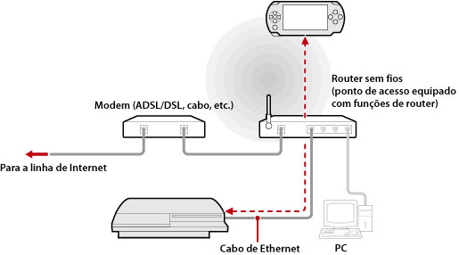
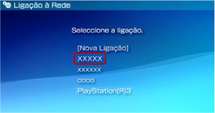

Rede > Utilizar a reprod. remota (através de um ponto de acesso)
Utilizar a reprod. remota (através de um ponto de acesso)
Ligue o sistema PS3™ a um ponto de acesso utilizando um cabo Ethernet e utilize a função LAN sem-fios do sistema PSP™ para ligar ao sistema PS3™ através do ponto de acesso.
Exemplo de uma configuração comum

Notas
- Um router sem fios é um dispositivo que adiciona a funcionalidade de ponto de acesso a um router. Um ponto de acesso é um dispositivo que lhe permite estabelecer uma ligação sem fios a uma rede. Um router é um dispositivo utilizado na partilha de uma ligação à Internet por vários dispositivos.
- Um modem pode estar equipado com a funcionalidade de router. Ligue o sistema PS3™ a um dispositivo equipado com funcionalidade de router.
- Se tanto o ponto de acesso como o modem estiverem equipados com funcionalidade de router, desligue esta funcionalidade em um dos dispositivos. O sistema PS3™ e o sistema PSP™ têm de estar ligados à mesma rede. Se forem utilizados dois ou mais routers simultaneamente, é possível que o sistema PS3™ e o sistema PSP™ sejam ligados a redes separadas, não permitindo a utilização da reprodução remota.
Preparar para a utilização (sistema PS3™ e sistema PSP™)
Para utilizar a reprodução remota pela primeira vez, tem de registar (em par) o sistema PSP™ com o sistema PS3™. Registe o sistema em  (Definições) >
(Definições) >  (Definições de Reprodução Remota) > [Registar o Dispositivo].
(Definições de Reprodução Remota) > [Registar o Dispositivo].
Preparar para a utilização (sistema PSP™)
Crie uma ligação de rede para ligar o sistema PSP™ a um ponto de acesso. Se o sistema PSP™ já tiver uma ligação de rede guardada para utilização num ligação à rede através de um ponto de acesso, não tem de criar uma nova ligação de rede. Para mais informações sobre como criar uma ligação de rede, consulte o manual do utilizador do sistema PSP™.
Utilizar a reprodução remota
1. |
No sistema PS3™, seleccione |
|---|---|
2. |
No sistema PSP™, seleccione |
3. |
Seleccione [Ligar através de Rede Privada]. |
4. |
Na lista de ligações, seleccione a ligação ao ponto de acesso a utilizar para a apresentação remota.  Se a ligação for bem sucedida, o ecrã do sistema PS3™ será apresentado no sistema PSP™. |
 (Rede) >
(Rede) >  (Reprodução Remota).
(Reprodução Remota). (Reprodução Remota).
(Reprodução Remota).Notas
- A reprodução remota pode ser utilizada no raio de alcance do sinal do ponto de acesso.
- Se activar a definição de início remoto no sistema PS3™, pode definir o sistema para ser ligado automaticamente (Acordar com a LAN). Neste caso, não é necessário executar o passo 1 acima descrito. Para obter mais informações, consulte (Definições) > (Definições de Reprodução Remota) > [Início remoto] neste manual.
Sair da reprodução remota
Prima o botão PS (botão HOME (início)) no sistema PSP™ e seleccione [Abandone a apresentação remota] > [Sair e desligar o sistema PS3™].
Nota
Seleccione [Sair sem desligar o sistema PS3™] se estiver a utilizar o sistema PS3™ para copiar ficheiros ou para executar transferências em segundo plano e outras tarefas que necessitem que o sistema continue ligado.